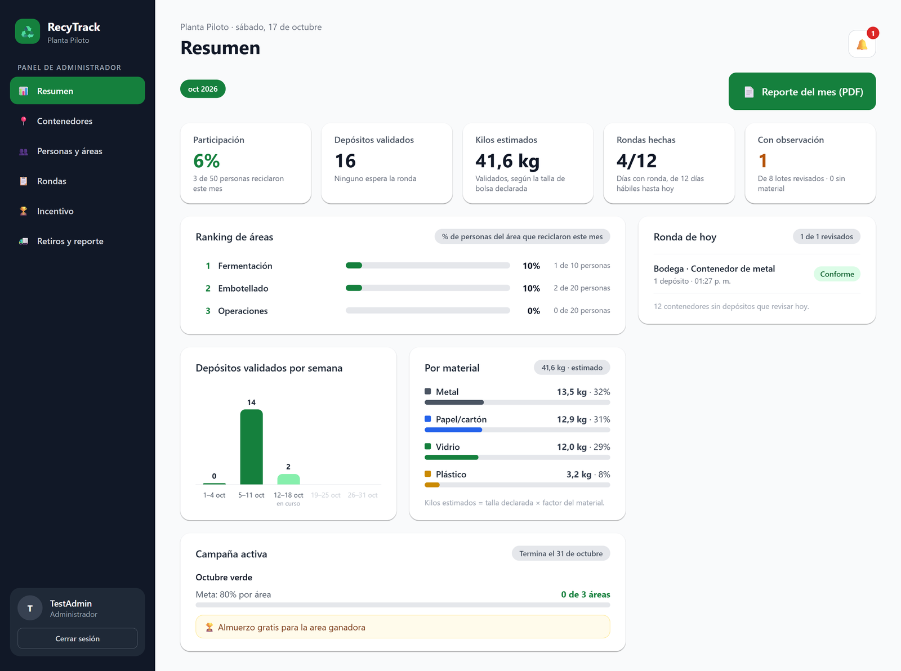
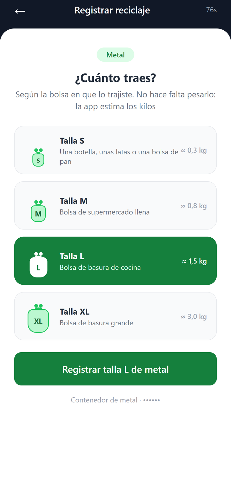
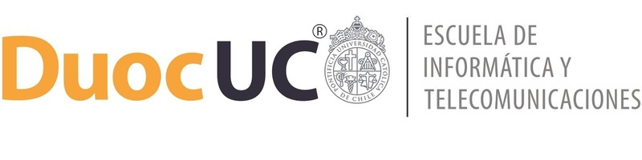
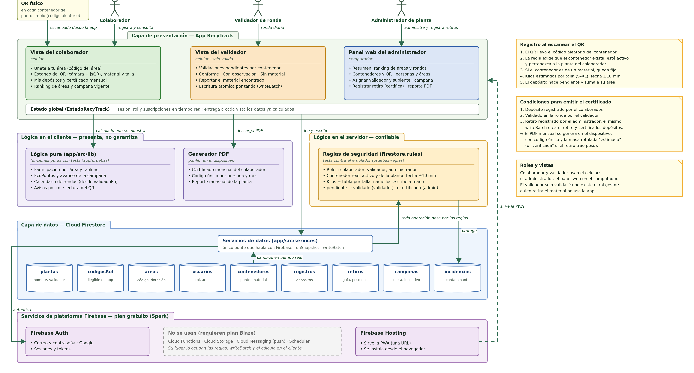
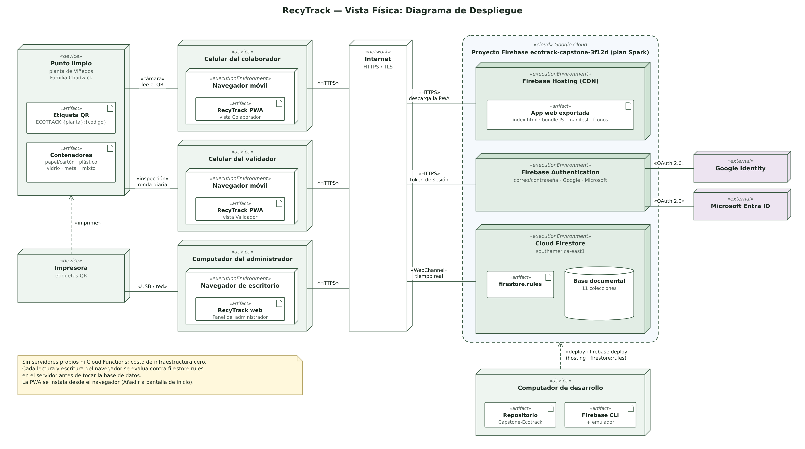
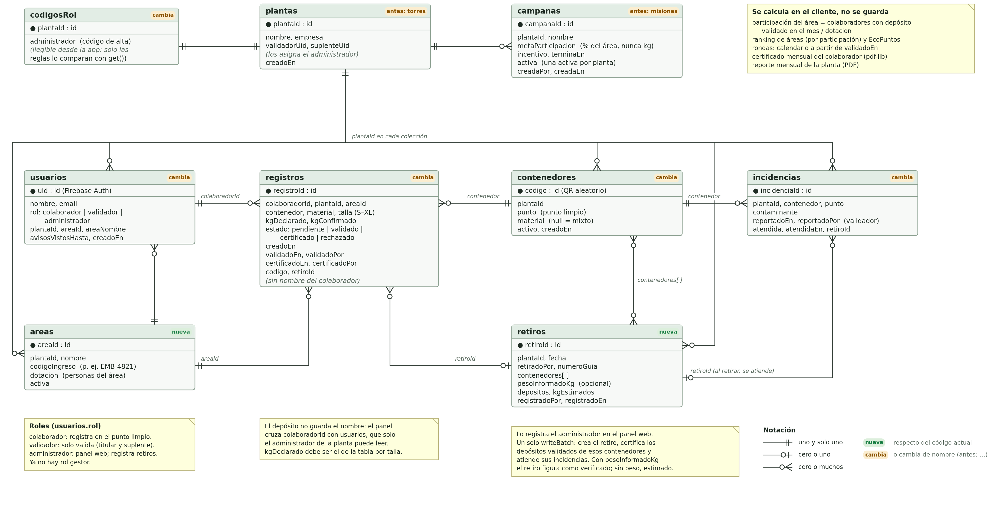
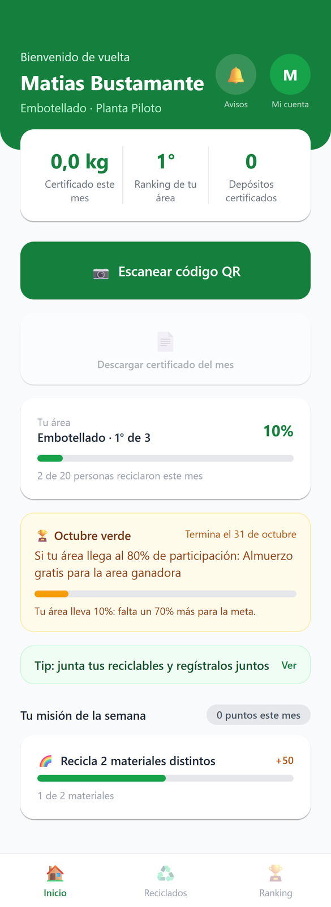

PRESENTACIÓN FINAL CAPSTONE · APT122
Trazabilidad del reciclaje colectivo con incentivos verificables
Para cualquier espacio compartido · validado en un piloto real
Álvaro Jaña · Matías Bustamante · Vicente Torres
Ingeniería en Informática · Sede Antonio Varas · 2026
PROYECTO RECYTRACK · INTEGRANTES
RecyTrack · Presentación final Capstone APT122
02
ÁJ
DESARROLLO FULLSTACK
App en React Native, vistas del colaborador y del validador, panel web, integración con Firebase y despliegue.
MB
SCRUM MASTER
Product Backlog y requisitos, ceremonias, plan de pruebas y coordinación del piloto con la viña.
VT
DATOS Y ARQUITECTURA
Modelo de datos en Firestore, arquitectura de la solución y reglas de seguridad de cada rol.
PROYECTO RECYTRACK · DESCRIPCIÓN DEL PROYECTO
PROBLEMA O DOLOR
5,2 %
de los residuos domiciliarios se valoriza en Chile
88,5 %
de los administradores no sabe qué pasa con el material
En condominios, empresas y colegios se recicla en puntos limpios compartidos, pero no queda registro:
¿Cuánto se recicla? ¿Quién participa? ¿Llegó el material a quien lo retira? Sin datos no hay cómo reconocerlo ni reportarlo.
PROPUESTA DE SOLUCIÓN
Una app en el celular y un panel web que registran, validan y reportan el reciclaje de un espacio compartido.
Medir: solo cuenta lo validado
Motivar: campañas y ranking por grupo
Reportar: PDF mensual para la organización
Sin balanzas ni sensores: costo de operación cero.
RecyTrack · Presentación final Capstone APT122
03
PROYECTO RECYTRACK · DÓNDE SE APLICA
UN SOLO MODELO
Organización
Grupos
Puntos limpios
Personas
Grupos: torres. Valida el conserje en su ronda.
Grupos: áreas. Valida quien ya recorre la planta.
Piloto: Viñedos Familia Chadwick
Grupos: cursos o facultades. Valida un auxiliar.
Grupos: pisos o equipos. Valida el personal de aseo.
LO QUE NO CAMBIA
QR por contenedor · ronda diaria del validador · retiro registrado por el administrador · ranking por grupo
RecyTrack · Presentación final Capstone APT122
04
PROYECTO RECYTRACK · CÓMO FUNCIONA
RecyTrack · Presentación final Capstone APT122
05
ESTADOS DEL DEPÓSITO
pendiente
validado
certificado
o rechazado · lo imponen las reglas de seguridad
1
Participante · celular
Escanea el QR del contenedor, elige el material y la talla de la bolsa. La app estima los kilos.
2
Validador · ronda diaria
Una pasada al día por contenedor: conforme, con observación o sin material.
3
Administrador · panel web
Registra el retiro con guía y peso opcional; eso certifica lo validado.
4
Sistema · PDF
Reporte mensual de la planta y certificado mensual de cada colaborador.
PROYECTO RECYTRACK · OBJETIVOS
OBJETIVO GENERAL · SMART
Lograr que una organización con puntos limpios compartidos sepa, con datos verificados, cuánto recicla y qué grupos participan, sin instrumentos de medición ni costo de infraestructura.
S
Específico
Saber cuánto se recicla, quién participa y si se retiró.
M
Medible
≥ 60 % de participación, ≥ 70 % de rondas, 100 % de reportes automáticos.
A
Alcanzable
QR impresos, celulares propios y plan gratuito: $0.
R
Relevante
Hoy ese reciclaje no deja registro ni se puede reportar.
T
Temporal
Antes del 27-nov-2026, tras un piloto de 2 semanas.
RecyTrack · Presentación final Capstone APT122
06
PROYECTO RECYTRACK · OBJETIVOS
RecyTrack · Presentación final Capstone APT122
07
| OE | Queremos lograr que… | Indicador | Plazo |
|---|---|---|---|
| 1 | cualquier persona se sume en minutos | Cuenta y grupo listos en ≤ 5 min | Semana 1 |
| 2 | cada depósito quede registrado al momento | ≥ 95 % de QR leídos; ≤ 30 s por registro | Todo el piloto |
| 3 ★ | lo registrado sea confiable | ≥ 70 % de rondas diarias realizadas | Todo el piloto |
| 4 | la trazabilidad llegue hasta el retiro | 100 % de retiros certifican lo validado | Cada retiro |
| 5 | la organización pueda reportar lo reciclado | 100 % de reportes y certificados automáticos | 27-nov |
| 6 ★ | los grupos se motiven a participar | ≥ 60 % con al menos un depósito validado | Todo el piloto |
| 7 | la organización gestione el programa sola | ≥ 75 % de retiros sin ayuda; SUS ≥ 68 | 20-nov |
| 8 | todo funcione sin inversión | $0 en hardware e infraestructura | Todo el proyecto |
★ críticos. Se miden en un piloto de 2 semanas, del 10 al 20-nov: el piloto es el medio para comprobarlos, no el objetivo.
PROYECTO RECYTRACK · ALCANCES Y LIMITACIONES
RecyTrack · Presentación final Capstone APT122
08
DENTRO DEL APLICATIVO
7 módulos
Incorporación por grupo
Registro por QR
Ronda diaria de validación
Registro de retiros
Reportes y certificados PDF
Campañas y ranking
Panel web del administrador
$0
sin hardware nuevo
FUERA DE ALCANCE
Residuos industriales y especiales
Pesaje con balanzas o sensores
IA predictiva
Integración con gestores
Publicación en tiendas de apps
Cloud Functions y avisos push
Límites declarados
Validación visual por contenedor, no por bolsa
Kilos estimados por talla, salvo retiro con peso
Totales en el cliente: ~180 personas
Piloteado en un solo contexto
PROYECTO RECYTRACK · METODOLOGÍA DE TRABAJO
RecyTrack · Presentación final Capstone APT122
09
PRODUCT OWNER · PILOTO
Organización piloto
SCRUM MASTER
Matías Bustamante
EQUIPO DE DESARROLLO
Álvaro, Vicente y Matías
CEREMONIAS
Planning al iniciar cada sprint
Coordinación asíncrona en GitHub y reuniones cortas
Review del incremento con la organización
Retrospectiva con acta y acciones
ARTEFACTOS
Product Backlog: 47 historias, 174 puntos, 8 épicas (una por OE)
Priorización: MoSCoW (29 Must) y estimación Fibonacci
Sprint Backlog: una hoja por sprint, con burndown
GitHub: issue, casillas, commits y pull request
Definition of Done
Pruebas de app y reglas en verde
PR aprobado por otro integrante
Merge commit con su autor
Funciona publicado y en el teléfono
Documentación al día
PROYECTO RECYTRACK · CRONOGRAMA
Ago
Sep
Oct
Nov
Dic
Cumplimiento
Actividad
Fechas
17
24
31
07
14
21
28
05
12
19
26
02
09
16
23
30
07
14
21
Definición (Fase 1)
17-ago – 28-ago
Cumplido
S0 · Validación en la oficina
31-ago – 11-sep
Cumplido
S1 · Arquitectura y roles
21-sep – 02-oct
100 % · 11 pts
S2 · Panel y configuración
05-oct – 16-oct
100 % · 31 pts
S3 · Registro y ronda
19-oct – 30-oct
100 % · 33 pts
S4 · Retiros y reportes
02-nov – 13-nov
100 % · 30 pts
S5 · Campañas y ranking
16-nov – 20-nov
100 % · 25 pts
S6 · Cierre y métricas
23-nov – 27-nov
60 % · 12/20
Piloto (2 semanas)
10-nov – 20-nov
En curso · 5/9 días
Documentación final
16-nov – 27-nov
◆ Defensa 01-dic
Cumplido
En curso
Planificado
Piloto
14-sep: receso de Fiestas Patrias
RecyTrack · Presentación final Capstone APT122 · S3 a S5 se adelantaron en el S2
10
PROYECTO RECYTRACK · ARQUITECTURA DEL SOFTWARE
Una PWA con tres vistas: colaborador, validador y panel web.
Lógica pura en el cliente; lo confiable, en las reglas del servidor.
Cloud Firestore; un solo paquete habla con Firebase.
Sin backend propio · $0

RecyTrack · Presentación final Capstone APT122
11
PROYECTO RECYTRACK · ARQUITECTURA DEL SOFTWARE
Celular, navegador y nube: todo por HTTPS a Firebase (plan Spark), región southamerica-east1, sin servidores propios.

RecyTrack · Presentación final Capstone APT122
12
PROYECTO RECYTRACK · MODELO DE DATOS
Cloud Firestore: la organización (plantas) es la raíz y cada colección guarda su id.
Registro = depósito
Su estado lo imponen las reglas.
Retiro atómico
Un lote crea el retiro y certifica los depósitos.
Privacidad
El depósito no guarda el nombre.

RecyTrack · Presentación final Capstone APT122
13
PROYECTO RECYTRACK · TECNOLOGÍAS UTILIZADAS
RecyTrack · Presentación final Capstone APT122
14
DISPOSITIVOS
Celular
participante y validador
Computador
administrador
APLICACIÓN · UN SOLO CÓDIGO
React Native + Expo
Un código para celular y panel web
TypeScript
Tipos del dominio: rol, estado, talla
NativeWind
Estilos para las vistas de 3 roles
jsQR · qrcode-generator
Leer el QR e imprimir etiquetas
pdf-lib
PDF generados en el dispositivo
HTTPS
FIREBASE · PLAN SPARK
Firebase Auth
Correo, Google y Microsoft
Cloud Firestore
Base documental en tiempo real
Reglas de seguridad
Roles y estados en el servidor
Firebase Hosting
Publica la PWA, sin tiendas
Sin servidores propios ni Cloud Functions
CALIDAD
Vitest · lógica de la app
Emulador de Firestore · cada regla
342 pruebas en verde
$0 de infraestructura
PROYECTO RECYTRACK · PILOTAJE
Un piloto con usuarios reales para comprobar la cadena fuera del laboratorio y medir los objetivos.
2
semanas
14
personas, 6 áreas
$0
QR y celulares propios
RUTA DEL PILOTO · Oficina Santiago
1
2
3
4
Preparar
Plataforma limpia y cuenta del administrador
Antes
Configurar
Grupos, contenedores, QR y validador
Antes
Lanzar
Charla breve por grupo y QR pegados
10-nov
Operar
Depósitos, ronda diaria y retiro semanal
2 semanas
Cerrar y medir
Reportes, encuesta SUS y objetivos
20-nov
RecyTrack · Presentación final Capstone APT122
15
PROYECTO RECYTRACK · RESULTADOS OBTENIDOS
Oficina de Viñedos Familia Chadwick, Santiago · 2 semanas (10 al 20-nov) · 14 participantes de 6 áreas · corte al 16-nov (5 de 9 días)
| OE | Indicador | Meta | Al 16-nov |
|---|---|---|---|
| 1 | Tiempo para sumarse | ≤ 5 min | Por medir |
| 2 | QR leídos y tiempo de registro | 95 % · 30 s | Por medir |
| 3 ★ | Rondas diarias realizadas | ≥ 70 % | 100 % ✓ |
| 4 | Retiros que certifican lo validado | 100 % | 100 % ✓ |
| 5 | Reportes y certificados automáticos | 100 % | Al cierre |
| 6 ★ | Participantes con depósito validado | ≥ 60 % | 77 % ✓ |
| 7 | Retiros sin ayuda · usabilidad SUS | ≥ 75 % · 68 | 0 de 1 · SUS — |
| 8 | Gasto en hardware e infraestructura | $0 | $0 ✓ |
TASA DE LOGRO
Objetivos que alcanzan su meta ÷ 8, con los dos críticos (★)
4 / 8
Al 16-nov: OE3, OE4, OE6 y OE8. OE1, OE2, OE5 y OE7 se miden al cierre.
7 u 8 Logrado: escalar
4 a 6 Parcial: ajustar
0 a 3 Replantear
RecyTrack · Presentación final Capstone APT122
16
PROYECTO RECYTRACK · OBSTÁCULOS
RecyTrack · Presentación final Capstone APT122
17
Organización lejana; cada uno en su práctica.
→ Trabajo asíncrono en GitHub y reuniones con la organización sin esperar a los tres.
Firebase, modelo documental y NativeWind.
→ Sprint 1 para la arquitectura; reglas y sus pruebas antes que las pantallas.
La organización pidió quitar el rol de gestor.
→ El administrador registra el retiro en el panel; reglas y pruebas reescritas.
Sin balanzas, Cloud Functions ni tiendas.
→ Validación visual, kilos por talla, reglas de seguridad y app web instalable.
9 PR sin revisión; seguimiento al final.
→ Retro del S2: aprobación de otro integrante y backlogs al día en cada cierre.
Datos reales y login Microsoft con su TI.
→ Validador suplente, seguimiento semanal y plazos de la organización.
PROYECTO RECYTRACK · EXPOSICIÓN DEL SISTEMA
DEMOSTRACIÓN EN VIVO
1 El colaborador escanea y registra
2 El validador hace la ronda
3 El administrador registra el retiro

RecyTrack · Presentación final Capstone APT122 · 18
PROYECTO RECYTRACK · CONCLUSIONES
RecyTrack · Presentación final Capstone APT122
19
01
Verificar sin medir
Una ronda diaria y el retiro registrado bastan para tener datos confiables, a costo $0.
02
Confianza en los datos
Las reglas impiden saltarse estados; por eso la cadena sirve en cualquier contexto.
03
Velocidad con disciplina
Avanzar rápido no basta: la revisión y las retrospectivas sostienen la calidad.
04
Lo que mostró el piloto
[Opinión de la contraparte]
COMPETENCIAS DEL PERFIL DE EGRESO
Desarrollar software: PWA con 2 vistas y panel web, en uso real
Modelar datos: Firestore con estados protegidos por reglas
Gestionar proyectos: Scrum, 174 pts de backlog y retros con acta
Certificar calidad: 342 pruebas y casos de prueba por sprint
TRABAJO FUTURO
→ Implementar en condominios, colegios
y oficinas
→ Varias organizaciones en la misma plataforma
→ Cloud Functions: lotes a 24 h y avisos push
→ Peso real del retiro como dato verificado
Muchas gracias.
Álvaro Jaña · Matías Bustamante · Vicente Torres
RecyTrack · Ingeniería en Informática · Duoc UC · 2026